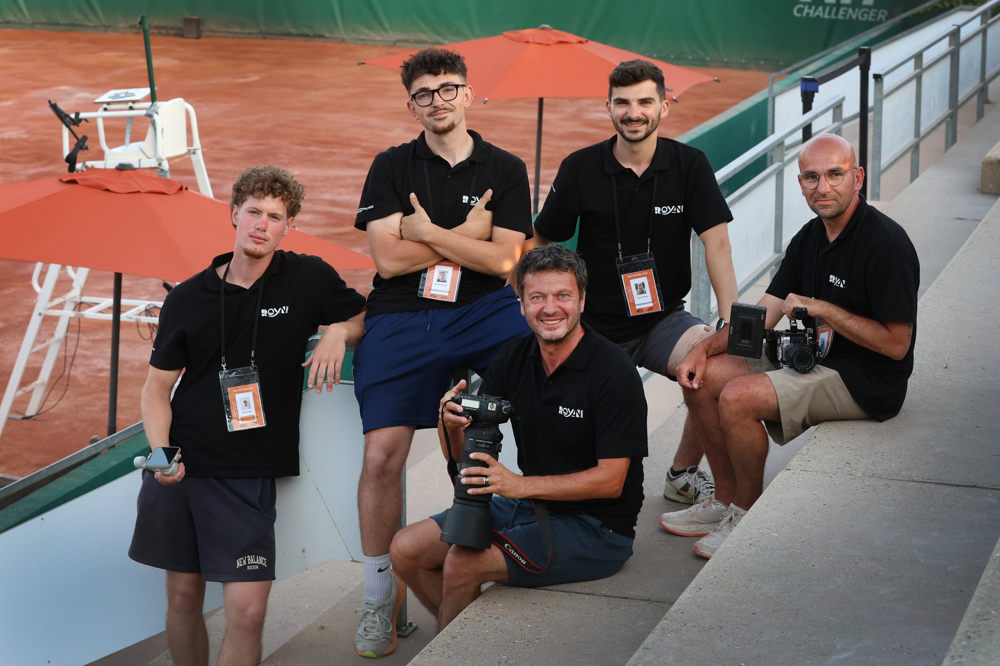
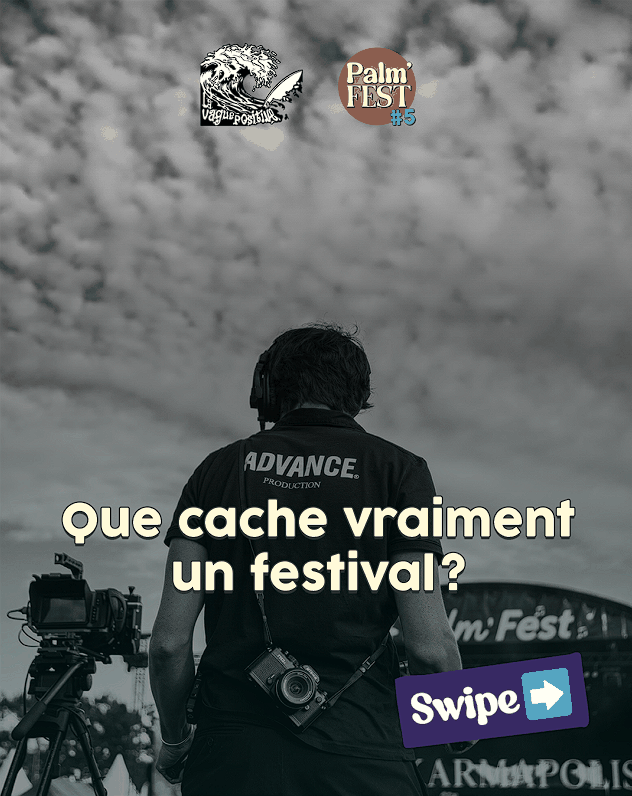

Garden Tennis de Royan · Groupe TSL
De la stratégie au direct.
Équipe communication · semaine du tournoi
Je transforme une stratégie en contenus qui vivent à l'écran comme sur le terrain — social media, vidéo, identité visuelle et communication événementielle.


Pilotage du compte Instagram du tournoi, création de contenus, interviews, communication en temps réel et appui opérationnel sur un événement où le planning pouvait basculer en quelques heures.
Instagram, ligne éditoriale, planning média et suivi des performances.
Reels, stories, interviews et montage vidéo.
Couverture live, adaptation aux imprévus et communication à chaud.
Installation, logistique, bénévoles et gestion opérationnelle.

Scores, résultats et formats adaptés au rythme de la compétition.

Déclinaisons éditoriales, visuels social media et cohérence de marque.
Formats verticaux conçus pour alimenter la couverture sociale du tournoi.
Donner une forme claire et attractive à un message, quel que soit le support.
Transformer la création en levier de visibilité, de communauté et de projet.
Faire exister la communication au-delà de l'écran, au contact des équipes et du public.

LinkedIn, mécénat, partenaires, création graphique, storytelling et analyse des performances.
Découvrir le projet ↗
Acquisition digitale, contenu social et expérience commerciale.

Branding, concept de plateforme et stratégie de communication.
Profil orienté communication marketing, création de contenu et événementiel, avec une formation commerciale qui me permet aussi de garder en tête les objectifs, les publics et la performance.
Voir mon parcours →Obtenu dans le cadre d'une double diplomation.
Marketing digital · e-business · entrepreneuriat. Cursus terminé, jury officiel en septembre 2026.
Natif · B2 · B1.
Disponible pour un CDI dès septembre 2026.
Communication marketing, contenu digital ou événementiel : discutons-en.